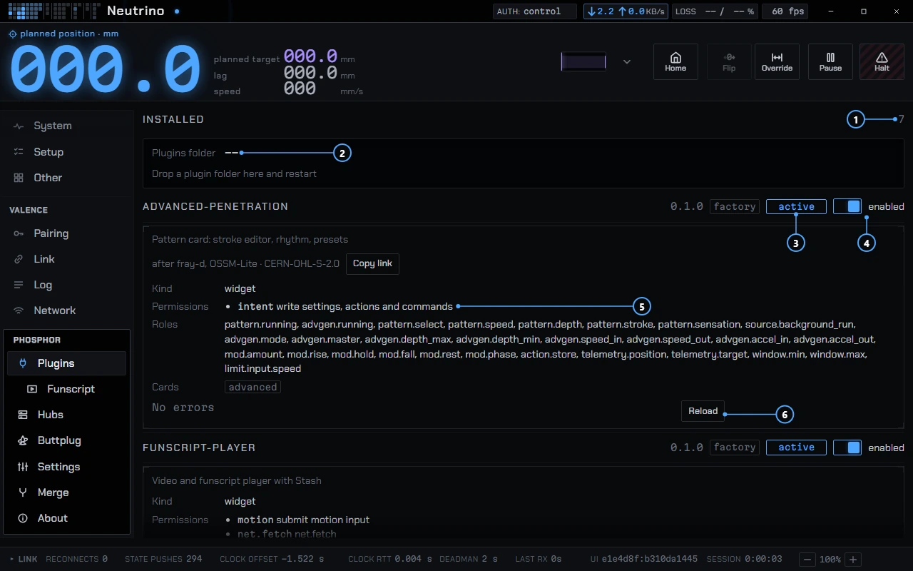

Plugins
A plugin adds a card, a page, a theme or a protocol adapter to Phosphor. It works through Valence, the same way every built-in control does, so it cannot reach the machine by a side door.
What a plugin can do
- Cards
- A card you can place on the Dash.
- Pages
- A tab in the sidebar under Plugins.
- Settings
- A card on the plugin's row in the Plugins pane.
- Menus and dock panels
- Items in the right-click menu, and a panel in the right dock.
- Themes
- A color preset. It carries no code and cannot change safety colors.
- Writes
- Settings, actions and commands, through the same path as a built-in control, so a plugin write shows the same pending, confirmed and refused states.
- Motion
- Position targets and scheduled segments, under the rules in Permissions below.
A plugin's API object has no session, socket or transport handle, so everything a plugin does to the machine goes through Valence, where the hub clamps it like any other client's request.
Plugins that ship with Phosphor
Factory plugins are bundled in the app and enabled by default. They use the same rules as any plugin you install.
| Plugin | What it does | Permissions |
|---|---|---|
| funscript-player | Plays a video and its funscript from disk or a Stash server, and drives the machine from the script. | motion · net.fetch · intent |
| Advanced pattern | The pattern card: a stroke editor, rhythm steps and presets. Credited to fray-d's OSSM-Lite. | intent |
| quick-access | Pin modules to a tray on the right. Not shown on phones. | intent · menu |
| saved-networks | The hub's Wi-Fi card: the networks it hears, tap to save one, and the saved list. WIP The scan picker follows protocol drafts. | intent |
| arcade | Three small games. Its page appears only under a hidden theme. Games work with no machine, and motion needs an Allow motion switch that starts off. | motion |
The node editor is also a plugin, called graph. The Plugins pane lists it as built-in.
The page a hub serves from its own flash loads no plugins at all. Plugins run in the Phosphor app.
Enable, disable, reload
The Plugins pane is in the sidebar's Phosphor section. It appears once Phosphor has a hub's catalog. Each plugin has a row with:
- An enabled switch. The choice is remembered. A disabled factory plugin stays off.
- A Show tab switch for plugins with a page. It hides the sidebar tab without disabling the plugin.
- Its version, where it came from (factory, built-in or folder), its status, its permissions, the roles it binds, and its settings card.
- A Reload button, and a last-error line that always shows, so an error never moves the layout.

- The number of installed plugins.
- The Plugins folder, where you drop your own.
- Status reads active while the plugin runs.
- The enabled switch turns the plugin on or off.
- Permissions lists what the plugin may do.
- Reload reloads the plugin.
A plugin that throws is recorded on its row and in the Log pane. If a card throws, it is dropped and its settings return to the standard controls.
Permissions
Reading needs no permission. A plugin declares everything else in its manifest, the Plugins pane shows the list, and the app refuses a gated call that the manifest did not declare.
| Permission | Allows |
|---|---|
intent | Writing settings, actions and commands, and controls bound to hub fields |
motion | Sending motion input to the machine |
menu | Adding items to the right-click menus |
net.fetch | HTTP and HTTPS requests to services that are not the machine. The connected hub's own addresses are refused. |
net.listen:<port> | A TCP listener on 127.0.0.1 only, never the LAN |
The motion lock
Only one plugin may send motion at a time. When one sends scheduled motion, it holds the motion input until its last segment ends plus 500 ms. Any other plugin's motion is refused meanwhile, with motion input in use by <plugin>, and the funscript player grays Play with the same words. A running pattern gives stop the pattern first.
The hub applies its own check on top. If another source holds the rail, the refusal reads refused: rail owned by <source>. The e-stop and pause in the top strip are Phosphor's, not a plugin's, and always work.
Installing a plugin
A plugin is a folder with a manifest.json and one module file. Put the folder in the plugins folder and restart Phosphor. The Plugins pane prints the folder's real path on your system. A plugin with the same name as a factory plugin replaces it.
A plugin you install is enabled right away, and a plugin runs with the full authority of the app page. The permission list is a record of what the plugin says it will do. It is not a sandbox: a hostile module could open its own network connection. Install a plugin only from a source you would trust with a program, and read its manifest first. The privacy page says the same: the plugins that ship with the app contact only addresses you configured, and a plugin from elsewhere can contact whatever its author wrote.
When you read a manifest, start with permissions. A manifest larger than 64 KiB, or a module larger than 2 MiB, is not loaded.
For developers
The full contract is in docs/PLUGINS.md. The short version:
- Module
- One self-contained ES module that exports
activate(api). Phosphor loads it from ablob:URL, so bundle your dependencies in.activatemay return a deactivate function. - Manifest
name,version,api(must be 1),kind(widget,adapterortheme),entry,description, and theroles,channels,permissionsand optionalcreditsit uses. An invalid manifest is listed with its problems and its code never runs.- Binding
- A card claims fields by registry role, never by channel id, so it works on any hub that has the role.
registerHerogives a card,registerPagea sidebar page,registerSettingsa settings card. - Reading and writing
value,status,gateandageread.writeneedsintent.submitMotion,submitSegmentsandsubmitSamplesneedmotion.- UI kit
api.uioffers Phosphor's own buttons, sliders, lists, sheets and pages in plain DOM, so a plugin looks native in every theme.- Stability
- The API freezes, additive only, when the first external plugin exists. Rows marked freeze candidate in the doc are the ones that freeze. The rest may still change.
Three examples are in the repo under plugins/examples: a read-only gauge, a UI kit demo and a TCode adapter. Examples are documentation and never load by default.